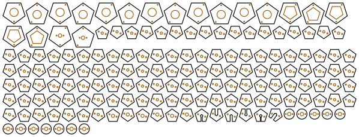

Practice chanters
Read the README · Turn them in 3D on a page of their own
Six Great Highland bagpipe practice chanters in 3mm plywood, alike except for their bores. One has a triangular bore, the others square, pentagonal, hexagonal, heptagonal and octagonal. Each is a stack of thin cross-section plates with the bore cut through every one, clamped on two threaded rods, under a stacked cap and mouthpiece. Three more are built differently, from long strips glued round the bore: the strip chanter, whose holes come from the model, the standard strip chanter, whose holes are a real practice chanter's, and the standard octagon, the same holes as slots in eight strips round an octagonal bore. Besides threaded rod, nuts and pins, the only part you buy is a plastic practice-chanter reed.
Output is millimetre-true — 1 user unit = 1mm with a physical width/height — so it prints and cuts at real size.
None has been cut or played yet. The holes come from an acoustic model that has not been checked against a real chanter, and the reed's length inside the cap is a guess. Before you cut says what that costs, and Tuning how to take it up.
 |
| the pentagonal chanter: every plate on one sheet |

Built for LaserMadeMusic.
The rest of the build files — every instrument, generator and tool, indexed.
Where the cut-off is
Built as stacked plates, there is no cut-off between three sides and eight. Every shape builds, fits one sheet and tunes in the model. What a bore's cross-section needs is the right area. Its shape matters far less: a square-bored chanter was built on exactly that principle, a square of the round bore's area at every point. Here every bore is the area of a 4mm circle, 12.57mm², the bore most practice-chanter makers drill. A plate is a slice across the chanter, so the polygon is simply cut out of it, and any polygon can be.
Two things change with the number of sides, and neither stops the build:
- The faces shrink. Each face of the bore is 5.39mm wide on the triangle, 3.54mm on the square, 2.70mm on the pentagon, 2.20mm on the hexagon, 1.86mm on the heptagon and 1.61mm on the octagon. By eight sides the laser's own kerf rounds the corners and the bore is all but round, so eight is where adding sides stops meaning anything, not where it stops working.
- The triangle has the most wall. For the same area it has 29% more wall than a round bore, against 13% for the square and 3% for the octagon. More wall means more friction losses, so the triangle's notes should be a little less bright and responsive. The model counts that loss.
There is a cut-off if the bore is built the other way, from long strips jointed round it as the octagonal flute is. Each strip is a face of the bore, and its finger joints need ply between them. In 3mm ply at a 4mm bore, only the square works. The pentagon leaves 1.36mm between joints where 3mm is needed. The hexagon and up leave less, and the octagon none. The triangle cannot be finger-jointed at all, since its corners are too sharp for the joint. Thinner 1.5mm stock buys the pentagon. A wider bore would buy more shapes, but then it is no longer a practice chanter. That is why these are stacks.
The chanters
| Pitch | low A at 240Hz, an octave below a pipe chanter's 470–480Hz; --low-a= sets it |
| Scale | low G to high A, the Highland scale in just intonation, G the harmonic seventh |
| Fingering | the standard Highland fingering: seven finger holes on the front, the high A thumb hole on the back |
| Bore | the area of a 4mm circle, 378mm long (381mm on the triangle), open at the sole |
| Body | the area of a 20mm circle on the outside, 396mm long (399mm on the triangle and the pentagon): 132 or 133 plates |
| Cap | 19 plates: a socket over the body and a chamber round the reed; then a 24-plate mouthpiece tapered as a real practice chanter's is |
| Joints | clamped on two M2 threaded rods; the cap press-fit on 2mm pins; the mouthpiece glued; the seams sealed with shellac |
| Sheets | one 600 × 305mm sheet of 3mm ply each |
| Sides | Bore, across its flats | Model's worst note | Sheet |
|---|---|---|---|
| 3, triangle | 3.11mm | in tune | 585 × 190mm |
| 4, square | 3.54mm | in tune | 596 × 184mm |
| 5, pentagon | 3.72mm | in tune | 598 × 227mm |
| 6, hexagon | 3.81mm | in tune | 597 × 217mm |
| 7, heptagon | 3.86mm | in tune | 594 × 220mm |
| 8, octagon | 3.89mm | in tune | 596 × 212mm |
Low G is left out of the worst note: it sounds from the whole bore, and the bore is a whole number of plates, so it lands up to 7 cents out. The generator prints how far for each shape.
The holes are not all the same size. Each is the width that puts its note in tune, in a fixed hand layout: the lower hand's four holes 27mm apart, the upper hand's three 27mm and then 21mm apart, the thumb 9mm above G (12mm on the pentagon to the octagon). A hole is a slot cut across one plate, 3mm tall and as wide as it needs. A slot under 1mm wide is too narrow to cut cleanly. Such a hole is drilled through instead, after assembly, at a small V cut into its plate's edge. The drill is the slot's area as a circle, so it tunes the same. On every shape that is G, 1.25 to 1.4mm; on every shape but the triangle also D, about 1.9mm.
On the pentagon to the octagon, 9mm above G, the thumb's slot would need to be wider than 5mm. It moves up the chanter instead, to the first plate where less than 5mm is enough, and its width is solved there, so it is in tune. A slot wider than the bore runs in to the bore's middle and ends square there.
The strip chanter
The second design builds the square bore from four long strips of 3mm ply, front, back and two sides, glued round it. The strips run from the sole to just above the high A hole. Above that the chanter is stacked plates, the cookies, up to the reed's seat.
| Bore | 3.54mm square in the strips, 4mm round in the cookies: the same area, so no note moves |
| Strips | 259.5mm long, 9.54mm square outside; finger-jointed (--joint=finger, the default) or butt-jointed (--joint=butt) |
| Cookies | 54 plates, 20mm square: 5 glued over the strips' top, 43 with the round bore, 6 for the seat; clamped on two M2 rods 169mm long |
| Where it changes | 244mm up the 406.5mm body, 0.60 of the way; high A's centre 10.0mm under the cookies |
| Holes | round, laser-cut in the strips, 1.02 to 3.09mm across; the thumb's in the back strip |
| Model | every note within 1.0 cents, low G too, since the strips can be any length |
| Sheet | one 599 × 157mm sheet, 101 parts |
Finger joints do work. The strips are 3mm thick round a 3.54mm bore. At each corner one strip has a finger 3mm deep and its neighbour a notch. Each strip has fingers along one edge or the other in turn, so it is seldom only its 3.54mm middle. Round each hole its own strip has fingers along both edges, 1.5mm past the hole, so the ply beside a hole is never a notch. The strip across from it then has none, for 4 to 10mm: the back strip opposite each front hole, and the front opposite the thumb's. Glued into the square, those stretches are held on all four sides. The fingers also line the strips up as they go together, which butt joints leave to you. With --joint=butt the front and back are 9.54mm wide and the sides 3.54mm, glued between them.
Why the holes are small. The holes are spaced for the hands, 27mm apart in each hand, but the scale's steps are not equal, so each hole is whatever size puts its note in tune where it stands. A hole for a small step, such as D or G, comes out small. The largest is limited by the bore: a hole wider than the bore's 3.54mm face would cut into the side strips, so 3.2mm is the most. The hand's layout is set by C and E, which are solved at 2.5mm and pull every other hole along with them. The wall's thickness matters little: with an 8mm wall the holes are within 0.4mm of these. It does matter for G. F to high G is the scale's smallest step, so G must sit 16mm above F instead of 21mm. Any further and high G would be sharp even at a 1mm hole.
The thumb has room. The cookies stand 5mm proud of the strips. The high A hole's centre is 10.0mm below that shoulder, so the thumb can seal it. Pass --switch=0.8 to put the change 4/5 of the way up instead.
The staple stops on its hemp. The round bore under the seat is 4mm, the size of the smallest staple, so a 4mm staple could slide on into it. A larger one stops on the bore.
What is glued. The strips to each other, and the strips into the cookies' socket. The cookies are clamped on rods, and the cap press-fits as on the plate chanters.
Building it:
- Cut the sheet. Dry-fit the four strips first: each strip's two edges have different finger patterns, so it goes in only one way.
- Glue the strips round a length of 3.5mm rod or a waxed drill bit, to keep glue out of the bore. Clamp lightly and wipe off any glue that squeezes out.
- Thread the cookies onto the two rods, from the seat down to the socket, with a nut and washer at the seat end. Brush shellac on each face as it goes on.
- Glue the strips' top 15mm into the socket. Put the bottom washers and nuts on and tighten them. Cut the rods flush with the top nuts.
- Seal the bore with shellac on a pipe cleaner, and fit the cap and reed as on the plate chanters.
The standard strip chanter
This one takes its holes from a real practice chanter: aero1016's model of the practice chanter they own, measured from its 3D file. That chanter has a 4.87mm round bore, 238.5mm from the sole to the reed's seat, its front holes 25mm apart from B up to F and low A 32mm below B, and a collar 10mm under the seat that the top rests on.
| Bore | 5.5mm square, from the sole into the collar |
| Strips | 236.3mm long, 11.5mm square outside, finger-jointed (--joint=butt for butt joints), glued |
| Foot | two layers of four strips lying flat round the strips' bottom, each cut to a 50mm circle: 19.25mm wide mid-face, shorter to the corners; 6mm tall. The reference's foot is 25.4mm round and 19mm tall, so this one is wider and lower |
| Band | three 10mm strips glued round the strips' front and sides, under the collar; none on the back, and each side piece's lower back corner cut away along a 10mm quarter circle up to the collar, so there is no hard edge beside the thumb |
| Collar | one 25.4mm round plate the strips' top stands in, wide enough to cover the band's corners, then two 22.2mm round plates with the reference's 4.87mm bore; the cap rests on them, flush |
| Tenon | 9 round plates 17mm across with the reference's 5.57mm reed seat; the cap slides over them. The 4.87mm bore under the seat is wider than any staple, as on the reference, so the staple is held by its hemp, not stopped by a step |
| Cap | the reference's: a plain tube 22.2mm round with a 17.6mm bore, 123mm long (the reference's 122), 40 rings and a closed top plate, glued, no pins; then the tapered mouthpiece, 24 plates |
| Jig | a 60mm square base and two rings with a 50.3mm hole, pinned into a cup, to glue the foot up in; not part of the chanter |
| Sheet | one 586 × 175mm sheet, 95 parts with the jig |
| Hole | Under the seat | This chanter | The reference |
|---|---|---|---|
| low A | 195.5mm | 3.33mm | 4.15mm |
| B | 163.5mm | 3.43mm | 3.95mm |
| C | 138.5mm | 3.64mm | 3.95mm |
| D | 113.5mm | 3.83mm | 3.95mm |
| E | 88.5mm | 4.06mm | 3.95mm |
| F | 63.5mm | 3.54mm | 3.35mm |
| high G | 43.1mm | 3.30mm | 3.05mm |
| high A, the thumb's | 31.1mm | 3.22mm | 2.95mm |
Every hole is where the reference's is, measured from the reed's seat, which is what the notes depend on. The sizes differ because a hole here goes through a 3mm strip, where the reference's walls are 5 to 7mm. A hole through a thinner wall sounds sharper, so it has to be smaller for the same note. A 4.5mm bore, the smallest that takes the reference's 4.15mm hole, would need holes of 2.5 to 3.2mm. The 5.5mm bore is the size at which they come back to the reference's, 3.2 to 4.1mm. Each is solved so its note sounds where the reference's does, in the model, and the bore is 3.8mm longer at the sole to bring low G there too.
The model is used only for the difference, not the pitch. It cannot reproduce the reference's own scale: at the reed allowance that fits best, 130mm, it is still about 40 cents out across the scale, low A at about 255Hz. So it is asked only how far the square bore and the thin wall move each note from where the reference's is, and it plays at whatever pitch the reference plays. The reference's maker had not yet printed it, so that pitch is the real chanter's they measured, not one anyone has checked on the print.
That difference depends on how the reed is modelled. The holes hardly move with the reed allowance's length: at 100mm or 160mm instead of 130mm, low A's hole changes by 0.1mm and the others by less. They do move with where it is put. Here the 130mm is taken as more of the square bore, as long as the reference's allowance. Taken instead as the reference's own 4.87mm round bore above the square, low G would want the bore 288mm long, not 242mm. Neither is measured, so the first one built and played settles it; expect to tune it.
Shellac barely moves the pitch. Dipping the chanter four times in 3 to 5 lb cut leaves perhaps 50 to 100µm of shellac on each surface. That is an estimate, not a measurement: the first coat soaks into the ply, and the film depends on the cut and how it drains. It narrows the bore from 5.5mm to between 5.4 and 5.3mm, and every hole by the same 0.1 to 0.2mm. In the model that flattens the notes by 1 to 3 cents, the high notes most. Watch for shellac pooling in the bore's corners and bridging the finger holes: blow through the chanter after each dip, and clear each hole with a toothpick. The seat narrows the same way, to about 5.4mm, still over the largest staple.
High A has room. The thumb reaches up past its hole, so the band leaves the back bare. The side pieces of the band are cut away along a quarter circle where they meet the back, so they slope up to the collar rather than ending square beside the thumb. Nothing stands proud of the back strip until the collar, 22.1mm above the hole's centre. On the reference chanter, its collar is 20.6mm above.
Cut the sheet, and glue the strips as in the strip chanter's first two steps, round a 5.5mm rod or waxed drill bit. Then:
- Press the jig's base and two rings together on two 2mm pins, and line the cup with packing tape or wax so the glue cannot stick to it. Stand the chanter in it on its sole. Glue the foot's layers in round the strips one at a time, the circle centring each. Each piece runs round one corner of the circle to the inner corner beyond. Each layer turns the other way from the one below, so no seam runs through.
- Glue the band round the strips' top 10mm: the wide piece across the front, the two narrow ones on the sides, flush with the back, their curved corners at the back and down, away from the collar.
- Press the collar's two round plates and the tenon together on two 2mm pins, and cut the pins flush with the collar's bottom face.
- Glue the strips' top 3mm into the collar's socket plate, and the collar's round plates onto it. The pins' ends land on the strips' top corners, inside the socket plate.
- Glue the cap's 40 rings and its top plate together, top plate last. Lay them in the inside corner of two straight boards while the glue sets, which lines up their outsides. Then glue the mouthpiece on as for the other chanters.
- Seal the chanter by dipping it four times in 3 to 5 lb cut shellac, as above. After each dip blow through the bore and clear each hole with a toothpick. Brush the inside of the cap.
- Push the reed's staple into the seat. Wrap the tenon with hemp or tape until the cap slides on snugly and rests on the collar.
The standard octagon
The standard strip chanter's holes on eight strips instead of four: the same measured chanter, its holes where that chanter's are, on an octagonal bore. An octagon's faces are narrow, so the holes are slots along the strips.
| Bore | an octagon 8mm across its flats, from the sole into the collar: 56.1mm², three times the reference's 4.87mm round |
| Strips | eight, 235.7mm long, 14mm across the flats outside, 5.8mm wide, finger-jointed, glued |
| Holes | slots 2.8mm across and 6.9 to 10.5mm long; the thumb's in the back strip |
| Foot | two 50mm round plates with the octagon through them, glued flush with the sole |
| Collar, tenon, cap, mouthpiece | the standard strip chanter's, but the collar's socket plate is 22.2mm, flush with the cap, and there is no band |
| Sheet | one 599 × 158mm sheet, 87 parts |
| Hole | Under the seat | Slot | As a round hole | The reference |
|---|---|---|---|---|
| low A | 195.5mm | 7.2 × 2.8mm | 4.86mm | 4.15mm |
| B | 163.5mm | 7.6 × 2.8mm | 4.98mm | 3.95mm |
| C | 138.5mm | 8.5 × 2.8mm | 5.29mm | 3.95mm |
| D | 113.5mm | 9.3 × 2.8mm | 5.56mm | 3.95mm |
| E | 88.5mm | 10.5 × 2.8mm | 5.95mm | 3.95mm |
| F | 63.5mm | 8.1 × 2.8mm | 5.18mm | 3.35mm |
| high G | 43.1mm | 7.2 × 2.8mm | 4.84mm | 3.05mm |
| high A, the thumb's | 31.1mm | 6.9 × 2.8mm | 4.74mm | 2.95mm |
Why slots. Each strip is 5.8mm wide outside but only 3.3mm inside, and a hole needs 1.5mm of ply each side, so nothing wider than 2.8mm fits. The notes want holes of 4.7 to 6mm, so each is a slot of that hole's area, as long as it needs, up to 12mm, which a finger pad still covers. The model treats a slot as the round hole of its area, as it does the plate chanters' slots. A bigger octagon does not help: its holes grow faster than its faces. A 12mm octagon would need slots about 4.5mm across and up to 17mm long.
The joints. The strips meet at 135°. Where a strip owns a corner it runs out to it; where its neighbour does, it stops 2.12mm short, square to its face. Each strip owns one of its two corners at a time, in turn, so most of its length is 3.7mm wide outside. Round each slot its own strip owns both corners, 1.5mm past the slot. Eight strips round eight corners can't all keep one each there, so the strip opposite owns neither, and is 1.56mm wide for the slot's length: the back strip opposite each finger hole, and the front opposite the thumb's, 97mm in all. Once glued, those stretches are held on both edges. Every corner also leaves a small groove along the bore, a 0.88mm right triangle, and the bore's area counts all eight.
The model's question is bigger here. The bore is three times the reference's area, where the square's is 1.6 times, so the model is asked for a bigger difference. It also depends on how the reed is modelled. Like the square, the octagon takes the reed's 130mm allowance as more of its own bore. Taken instead as the reference's round bore above it, low G would want the octagon 328mm long, not 242mm, and the square 288mm. Neither is measured, so treat this chanter as the more experimental of the two and expect to tune it.
Building it:
- Cut the sheet. Dry-fit the eight strips round a waxed 7.5mm dowel or drill bit. Each strip's two edges have different finger patterns, so it goes in only one way. The front strip carries the seven finger slots and the back strip the thumb's.
- Glue the strips round the dowel. Hold them with tape or rubber bands while the glue sets, and wipe off any that squeezes into the bore.
- Press the collar's two round plates and the tenon together on two 2mm pins, and cut the pins flush with the collar's bottom face.
- Glue the strips' top 3mm into the collar's socket plate, and the collar's round plates onto it. The pins' ends land on the strips' top.
- Slide the two foot plates on from the sole and glue them flush with it, on a flat board.
- Glue the cap's 40 rings and its top plate together, top plate last, in the inside corner of two straight boards. Then glue the mouthpiece on as for the other chanters.
- Seal the chanter by dipping it four times in 3 to 5 lb cut shellac, as for the standard strip chanter. After each dip blow through the bore, so the shellac fills the corner grooves without pooling, and clear each slot. Brush the inside of the cap.
- Push the reed's staple into the seat. Wrap the tenon with hemp or tape until the cap slides on snugly and rests on the collar.
How it is built
From the top down:
- The mouthpiece, 24 round plates with a 4.5mm blowing hole, shaped as the measured practice chanter's top piece is: a 45° shoulder off the cap, a step to 16.5mm, a step to 14.3mm, then a long taper from 12.4 to 11.0mm and a rounded lip. It is 72mm long, the reference's 71.5mm. Each plate is cut to the reference's diameter at its own mid-height, so the long taper goes down in steps of under 0.1mm. The plates are too narrow for pins, so they are glued, lined up on a rod through the blowing hole.
- The cap: two top plates, twelve plates round a 14mm chamber for the reed's blades, and five plates whose hole is the body's own polygon, 0.3mm larger, to slide over the top of the body. It is the body's shape grown 6.3mm outward, pressed together on two pins in its corners.
- The seat: six plates with a 5.5mm round hole that takes the reed's staple. Practice-chanter staples run 4 to 4.8mm across. The bore below is narrower than any of them, so the staple stops on it.
- The bore: one plate for every 3mm, the polygon through each, down to the open sole. Eight of them carry the finger holes.
Every body plate has the same two rod holes, placed so that turning or flipping the plate puts them somewhere else: a plate threads on only one way, so no slot can end up facing the wrong way. The rods are clamped by a nut and washer at each end. A pin pressed through 130 plates would never go in, and nothing is glued. The cap is not on the rods, since it comes off to set the reed. It slides over the top five plates of the body and rests on the two top nuts.
Turn them in 3D
The 3D view is at the top of this page: drag to turn a chanter, pull it apart along its length, and switch between the standard, the standard octagon and the six plate bores. It also opens on a page of its own.
Before you cut
Measure the ply. The stack multiplies the stock's error by every plate in it. 2.9mm ply makes the bore 13mm short, and every note 50 to 57 cents sharp in the model, which is a quarter-tone. Measure a few places on the sheet with calipers, then pass the average as --plate=. The generator re-solves every hole on that grid, and the plate count follows.
The reed's length is a guess. The model treats the reed and staple as 20mm of extra closed bore, which is not a measured figure. A reed pushed deeper into its seat plays sharper, and one pulled out plays flatter. That is how every practice chanter is pitched, and it shifts the whole scale together, but it cannot fix one note against another. --reed= sets the figure if you measure your own.
The model does not match a real chanter. It is a transfer-matrix model with textbook tone-hole and end corrections. Given the measured chanter that the standard strip chanter copies, it cannot reproduce that chanter's scale at any reed allowance. The closest, at 130mm, is still about 40 cents out, and at the 20mm the six plate chanters and the strip chanter were designed with, the reference's scale comes out stretched by hundreds of cents. So the model's own designs may play well out of tune, with the upper notes sharpest, until a real chanter has been played and the model fitted to it. The standard strip chanter avoids most of this by copying a real chanter and using the model only for the difference. For the others, expect to do the Tuning in earnest.
The slots are cut exactly to width, so a kerf other than the default 0.13mm changes every hole. Pass yours with --kerf=.
Building it
You need two lengths of M2 threaded rod, four M2 nuts and washers, a few centimetres of 2mm brass rod for the pins, high-cut shellac, and a plastic practice-chanter reed.
- Cut the sheet. The generator prints the stacking order for its shape. For the square it is: 6 seat, 51 bore, hA, 2 bore, G, 6 bore, F, 8 bore, E, 5 bore, D, 8 bore, C, 8 bore, B, 8 bore, A, 22 bore. Here "seat" and "bore" are runs of the plain plates, and the letters are the hole plates.
- Cut the rods to the length the generator prints: 403mm, or 406mm for the triangle and the pentagon. Put a nut and washer on one end of each.
- Thread the plates on from the sole up, in the reverse of that order. Brush thin shellac on each face as it goes on. The slots all face the same way because the rods only let them.
- Put the top washers and nuts on and tighten them evenly, just enough to close every seam. Cut the rods off flush with the top nuts, or the cap will rest on the rods instead of the nuts. Let the shellac dry.
- Drill the small holes at their V marks, starting a size under the printed figure. Then seal the bore: draw a pipe cleaner wet with shellac through it a few times, and let it dry. Brush the inside of the cap the same way.
- Press the cap's plates together on two pins through its corners. Stack the mouthpiece's plates, widest first, on a 4.5mm drill shank pushed down through the cap's top, gluing each one, and pull the shank out before the glue sets. Sand the steps of the long taper smooth if you like.
- Push the reed's staple into the seat. Wrap it with hemp if it is loose. Put the cap on.
Tuning
Tune low A first, by moving the reed in or out of its seat. Then go up the scale:
- A note that is flat wants its hole bigger. File the slot wider a little at a time, or open the drill up a size.
- A note that is sharp wants its hole smaller. Line part of the slot with tape, or with a sliver of veneer and shellac.
- Low G has no hole. Tape across part of the open sole flattens it.
Widening a hole moves its own note most, about 10 cents for a fifth wider in the model. The notes either side of it move a cent or two, so go up the scale once, then check every note again and touch up.
Regenerating it
python3 practice_chanters.py --sides=5 --no-write # the checks, writing nothing
python3 practice_chanters.py --sides=5 --out=cut-files # its sheet
python3 practice_chanters.py --sides=5 --plate=2.9 --no-write # for ply as measured
python3 practice_chanters.py --sides=5 --reed=24 --no-write # a different reed allowance
python3 practice_chanters.py --sides=5 --low-a=233 --no-write # a different pitch
python3 practice_chanters.py --sides=5 --kerf=0.18 --out=mine # for a laser with a 0.18mm kerf
python3 strip_chanter.py --out=cut-files # the strip chanter, finger-jointed
python3 strip_chanter.py --joint=butt --out=cut-files # the strip chanter, butt-jointed
python3 standard_chanter.py --out=cut-files # the standard strip chanter
python3 standard_chanter.py --joint=butt --out=cut-files # the same, butt-jointed
python3 standard_octagon.py --out=cut-files # the standard octagon
python3 practice_chanters.py --page-to=turn.html # the 3D view, every design
python3 chanter_model.py --sides=5 # the acoustic model alonepractice_chanters.py draws nothing until every check passes:
- every note is in tune in the model, and low G is as near as whole plates allow;
- the bore is a 4mm round bore's area;
- the bore is whole plates, down to the sole;
- every finger hole is in its own plate, at its centre;
- every hole is cuttable or drillable;
- every slot runs the width it is tuned for;
- every rod and pin keeps ply between it and every cut;
- the nuts sit on the end plates, inside the body;
- every body plate goes on only one way;
- the seat holds a staple, and the bore stops it;
- the cap slides over the body and stops on its nuts;
- every sheet fits the bed;
- no two parts on a sheet come closer than the gap;
- every part is on a sheet.
practice_chanters.py imports the kerf and the Part class from the square flute's square_flute.py, the mitred offset from the four-hole ocarinas' four_hole_ocarinas.py, the path writer from swept-curve and the 3D page from lasermade-tools. So square-flute, four-hole-ocarinas, swept-curve and lasermade-tools must be checked out beside this repository.
Files
Every chanter is one sheet of 3mm ply.
cut-files/practice-chanter-3-sided-sheet1-cut-files.svg |
the triangular chanter, every plate |
cut-files/practice-chanter-4-sided-sheet1-cut-files.svg |
the square chanter, every plate |
cut-files/practice-chanter-5-sided-sheet1-cut-files.svg |
the pentagonal chanter, every plate |
cut-files/practice-chanter-6-sided-sheet1-cut-files.svg |
the hexagonal chanter, every plate |
cut-files/practice-chanter-7-sided-sheet1-cut-files.svg |
the heptagonal chanter, every plate |
cut-files/practice-chanter-8-sided-sheet1-cut-files.svg |
the octagonal chanter, every plate |
cut-files/practice-chanter-strips-finger-joint-sheet1-cut-files.svg |
the strip chanter, finger-jointed: strips, cookies, cap |
cut-files/practice-chanter-strips-butt-joint-sheet1-cut-files.svg |
the strip chanter, butt-jointed |
cut-files/practice-chanter-standard-strips-finger-joint-sheet1-cut-files.svg |
the standard strip chanter, finger-jointed: strips, foot, band, collar, tenon, cap, and the foot jig |
cut-files/practice-chanter-standard-strips-butt-joint-sheet1-cut-files.svg |
the standard strip chanter, butt-jointed |
cut-files/practice-chanter-standard-octagon-sheet1-cut-files.svg |
the standard octagon: eight strips, foot, collar, tenon, cap |
previews/practice-chanter-3-sided-sheet1-cut-files.svg · previews/practice-chanter-4-sided-sheet1-cut-files.svg · previews/practice-chanter-5-sided-sheet1-cut-files.svg · previews/practice-chanter-6-sided-sheet1-cut-files.svg · previews/practice-chanter-7-sided-sheet1-cut-files.svg · previews/practice-chanter-8-sided-sheet1-cut-files.svg · previews/practice-chanter-strips-finger-joint-sheet1-cut-files.svg · previews/practice-chanter-strips-butt-joint-sheet1-cut-files.svg · previews/practice-chanter-standard-strips-finger-joint-sheet1-cut-files.svg · previews/practice-chanter-standard-strips-butt-joint-sheet1-cut-files.svg · previews/practice-chanter-standard-octagon-sheet1-cut-files.svg |
a display rendering of each sheet — not cut files |
turn.html |
the 3D view, every design, on a page of its own |
practice_chanters.py |
the generator, its checks, the cut files and the 3D view |
strip_chanter.py |
the strip chanter's generator and its checks |
standard_chanter.py |
the standard strip chanter's generator: the measured chanter, the hole sizes, its checks |
standard_octagon.py |
the standard octagon's generator: the slots, the joints, its checks |
chanter_model.py |
the acoustic model: where each hole goes and how wide |
README.md · index.html |
this writeup and its published page; the markdown is the source |
.repro |
the command that draws each generated file |
.doc-audit-links |
the one link the link check may find refusing scripts: Thingiverse answers them all 403 |
Released under CC0 1.0.